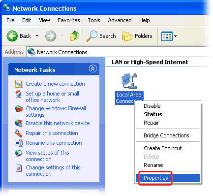

First Double click the "Network Connections" icon in the Control Panel:
(Click "Switch to Classic View" if it doesn't look like this)
Right-click your Internet connection's icon and select "Properties":

Select the "Internet Protocol (TCP/IP)" item, and click the "Properties" button:

Check "Use the following DNS server addresses" and enter the IP address of the local DNS server (*) as the Preferred DNS server:

Finally click "OK" both in the "Internet Protocol (TCP/IP) Properties" and "Local Area Connection Properties" dialogs to save your changes.
(*) The DNS server IP address must match an IP address that Simple DNS Plus is configured to listen on in the Options dialog / DNS / Inbound Requests section.
If you are configuring the computer which Simple DNS Plus is running on, you can use 127.0.0.1 (the "localhost" address) - otherwise you must use an IP address which is accessible over the local area network.